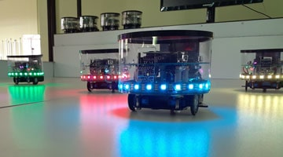
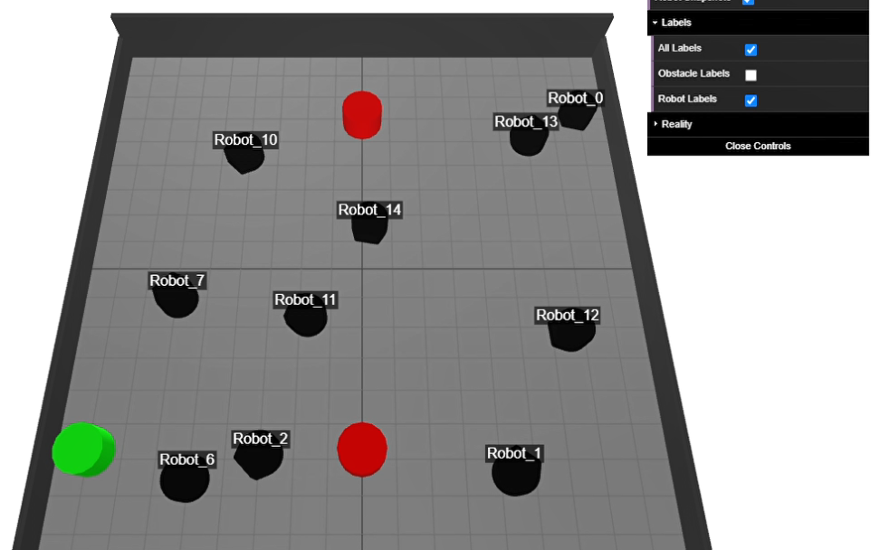
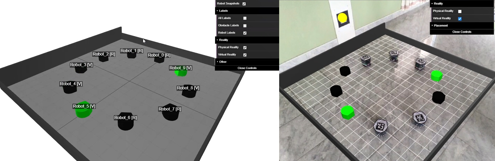
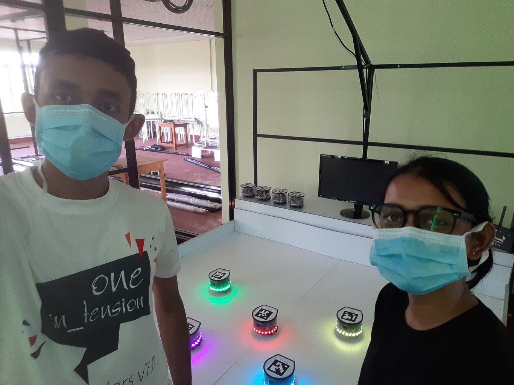

Submitted for "Robotics and Autonomous Systems Journal" - Under Review
The term “Swarm Intelligence” is the collective behavior of a combination of many simple
individuals, where they operate autonomously. “Swarm Robotics” is the application of swarm
intelligence used in collective robotics. This has been a new approach to the coordination of
mass of robots that are capable of local communication, decentralized controlling, autonomous
and also operations based on biological inspiration senses.
Experiments in this area frequently necessitate a large number of robots with specialized
hardware, which is typically expensive. In addition, it is necessary to conduct and test the
experiments in a well-controlled environment. This is a common concern among researchers working
in this field. So, the most common solution would be to use a simulator. However, it may not
accurately reflect the complexities of real-world experimentation.
Therefore, we introduce a mixed reality framework that combines the two realities, allowing us
to model and execute swarm behavioral experiments with a few real robots and an unconstrained
number of virtual robot instances that emulate the characteristics of real robots.
Gallery




Authors


Resources/ Links
- Project Page
- Project Documentation
- Experiment: Color Ripple
- Experiment: Find Red Cylinder
- https://github.com/pera-swarm